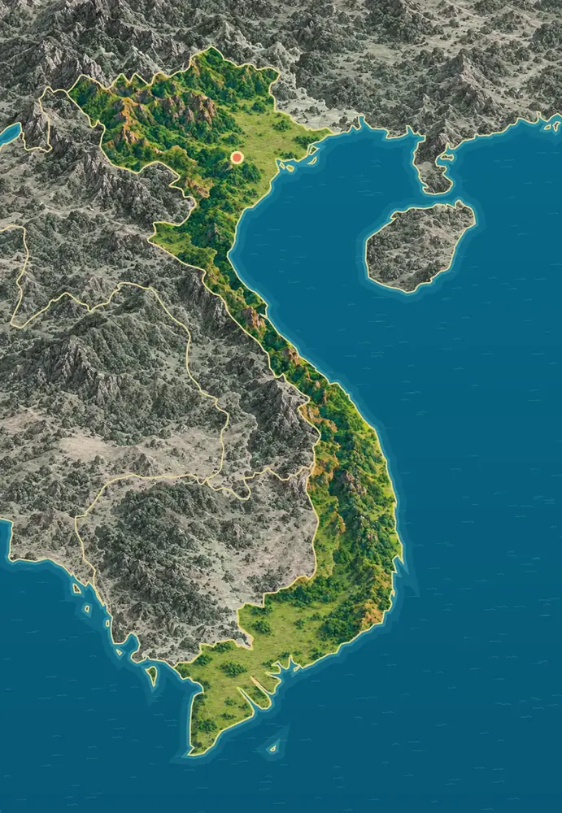
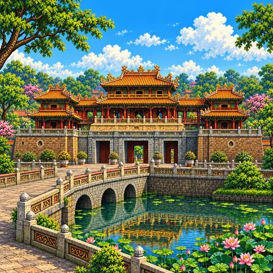
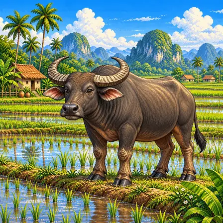
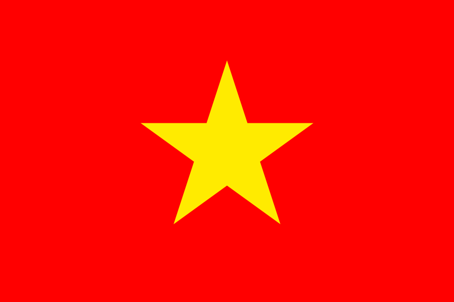

북부 산지와 쯔엉선산맥
북부에는 험한 산줄기와 깊은 골짜기가 있어요. 서쪽 국경을 따라 쯔엉선산맥이 남쪽으로 이어지고, 남중부에는 높은 고원이 펼쳐져요.

베트남은 S자 모양으로 남북으로 길쭉한 나라예요. 북쪽에는 산이 많고, 남쪽 끝에는 메콩강이 만든 넓고 낮은 땅이 있어요.
베트남은 대륙의 동쪽 해안을 따라 남북으로 길게 뻗어 있어요. 북부 산지와 서쪽의 쯔엉선산맥, 좁은 중부 해안 평야, 양 끝의 홍강·메콩강 삼각주가 나타나요.
북부에는 험한 산줄기와 깊은 골짜기가 있어요. 서쪽 국경을 따라 쯔엉선산맥이 남쪽으로 이어지고, 남중부에는 높은 고원이 펼쳐져요.
하노이 주변의 홍강 삼각주와 남부의 메콩강 삼각주는 넓고 평평한 낮은 땅이에요. 두 곳 모두 논이 많아 쌀을 많이 길러요.
출처: FAO, Viet Nam country profile · NASA Earth Observatory, Flooding on the Mekong River
베트남은 대륙의 해안을 따라 남북으로 길게 뻗어 있어요. 중부에서는 산이 바다 가까이 다가와 해안 평야가 좁고, 만과 곶이 해안선을 들쭉날쭉하게 만들어요.
홍강과 메콩강은 상류에서 흙과 모래를 실어 와요. 강어귀에 이 흙이 쌓여 삼각주가 되었고, 여러 갈래의 물길과 습지가 함께 있어요.
출처: NASA Earth Observatory, Flooding on the Mekong River · FAO, Viet Nam country profile
북동쪽 하롱베이에는 1,000개가 넘는 섬과 바위섬이 있어요. 빗물에 조금씩 녹는 석회암이 오랜 시간 깎여 가파른 봉우리와 동굴이 되었고, 그 사이로 바닷물이 들어왔어요.
산지에는 오래된 암석이 드러나 있고, 삼각주의 땅은 강이 실어 와 쌓은 부드러운 흙으로 이루어져 있어요. 같은 나라 안에서도 땅이 만들어진 방법이 크게 달라요.
베트남에서 잘 알려진 도시, 역사유산, 자연, 식물, 문화, 음식, 동물, 인사말, 국기를 한 장씩 그렸어요.
하노이는 베트남의 수도예요. 도시 한가운데에 호안끼엠이라는 호수가 있어요. 호수 안 작은 섬에는 거북탑이 서 있어요.
하노이는 베트남 북부 홍강 유역에 자리한 수도예요. 호안끼엠 호수는 도심의 대표적인 쉼터이며, 작은 섬 위의 거북탑은 잘 알려진 상징이에요. 주변에는 오래된 상점가와 가로수, 다양한 시대의 건물이 어우러져요. 구시가지에는 전통적인 업종과 관련된 거리 이름이 남아 있어 생활과 교역의 역사를 느낄 수 있어요.

후에 왕궁은 베트남 마지막 왕조의 임금님이 살던 곳이에요. 큰 돌문 위에 나무로 지은 누각이 올라앉아 있어요. 부서진 곳을 지금도 고치며 지키고 있어요.
후에는 19세기부터 20세기 전반까지 응우옌 왕조의 수도였어요. 왕궁과 성곽, 정원은 향강과 주변 산을 고려해 배치되었어요. 황성의 정문인 오문(Ngọ Môn)은 넓은 돌문 위에 목조 누각이 올라선 모습과 기와지붕이 특징이에요. 후에 유적군은 1993년 유네스코 세계유산으로 등재되었으며, 훼손된 건물과 장식을 보존하고 복원하는 작업이 이어져요.
하롱베이에는 바다 위로 바위섬이 1,600개쯤 솟아 있어요. 오랜 세월 비와 바닷물이 바위를 깎아 만들었어요. 이름은 '용이 내려온 곳'이라는 뜻이에요.
하롱베이는 베트남 북동부 해안의 석회암 카르스트 풍경이에요. 풍화와 침식이 석회암을 오랜 시간 다듬어 가파른 봉우리와 동굴을 만들었어요. 바다가 이 지형에 들어차면서 많은 봉우리가 섬처럼 물 위로 솟아 있어요. 바위의 모양과 높이가 다양하고, 틈과 경사면에는 식물이 자라요. 하롱베이는 1994년 유네스코 세계유산으로 등재되었으며, 현재 세계유산에는 깟바 군도도 함께 포함돼요.
부겐빌레아는 담장을 타고 오르는 덩굴 식물이에요. 분홍색으로 보이는 부분은 꽃잎이 아니라 꽃을 감싼 잎이에요. 그 가운데에 작은 흰 꽃이 숨어 있어요.
부겐빌레아는 줄기를 길게 뻗어 담장이나 문 위를 덮는 덩굴성 식물이에요. 화려한 분홍색 부분은 꽃잎이 아니라 작은 꽃을 둘러싼 포엽이에요. 포엽 사이를 가까이 보면 크기가 작은 흰 꽃을 찾을 수 있어요. 햇빛을 좋아하며, 베트남의 따뜻한 지역에서는 집과 골목을 꾸미는 모습으로 볼 수 있어요.
아오자이는 '긴 옷'이라는 뜻의 베트남 전통 옷이에요. 발목까지 오는 긴 윗옷에 통 넓은 바지를 입어요. 학교 교복으로 입기도 해요.
아오자이는 '긴 옷'이라는 뜻의 베트남 전통 의상이에요. 발목까지 내려오는 긴 윗옷의 양옆이 허리까지 트여 있고, 그 아래에 통이 넓은 바지를 함께 입어요. 지금의 날씬한 형태는 1930년대에 다듬어졌어요. 흰 아오자이에 야자잎으로 엮은 모자 논라를 함께 쓴 모습은 베트남을 대표하는 풍경이에요. 오늘날에는 결혼식 예복은 물론 여학생의 교복으로도 입어요.
퍼는 맑은 고기 국물에 납작한 쌀국수를 넣은 음식이에요. 숙주와 향긋한 풀을 얹고 라임을 짜서 먹어요. 베트남 사람들은 아침으로 즐겨 먹어요.
쌀국수(퍼)는 소뼈를 오래 고아 만든 맑은 국물에 납작한 쌀국수와 얇게 저민 소고기를 넣은 베트남 대표 음식이에요. 20세기 초 베트남 북부 하노이 지역에서 시작됐다고 전해져요. 국물에는 계피, 팔각 같은 향신료를 넣어 은은한 향을 내요. 숙주와 향긋한 허브를 듬뿍 얹고 라임을 짜서 입맛에 맞게 먹어요. 베트남에서는 아침 식사로 즐겨 먹어, 이른 아침부터 쌀국수 가게가 붐벼요.

물소는 크게 휜 뿔을 가진 소예요. 더운 날에는 진흙탕에 들어가 몸을 식혀요. 오랫동안 논을 갈며 농부를 도와 왔어요.
물소는 뒤로 굽은 큰 뿔과 짙은 회색 몸을 가진 소과 동물이에요. 이름처럼 물을 좋아해 더운 낮에는 진흙탕에 몸을 담가 체온을 식히고 벌레를 막아요. 넓적한 발굽 덕분에 진흙 논에서도 빠지지 않고 걸을 수 있어요. 베트남 농촌에서는 수천 년 동안 무논을 갈고 짐을 나르는 일을 도와 온 고마운 가축이에요. 지금도 농촌 풍경에서 빼놓을 수 없는, 부지런함을 상징하는 동물이에요.
씬짜오(Xin chào)는 베트남어로 '안녕하세요'예요. 베트남어는 같은 소리도 높낮이에 따라 뜻이 달라져요. 글자 위의 작은 표시가 소리의 높낮이를 알려 줘요.
씬짜오(Xin chào)는 안녕하세요라는 뜻으로 쓰는 베트남어 인사말이에요. 실제 대화에서는 상대와의 관계에 맞는 호칭을 함께 쓰기도 해요. 베트남어는 성조가 있어 소리의 높낮이와 변화가 낱말의 뜻을 구별해요. 로마자에 여러 부호를 더한 꾸옥응으(Quốc Ngữ)로 적으며, chào의 à 위에 있는 기호도 성조 표시예요.

베트남 국기는 빨간 바탕 가운데에 노란 별 하나가 있어요. 그래서 '금성홍기'라고 불러요. 별의 다섯 꼭짓점은 여러 사람이 하나로 뭉친 것을 뜻해요.
베트남 국기는 빨간 바탕 한가운데에 노란 별 하나가 그려져 있어요. '금색 별의 붉은 깃발'이라는 뜻으로 금성홍기라고 불러요. 별의 다섯 꼭짓점은 지식인, 농민, 노동자, 상인, 군인 다섯 집단이 하나로 뭉친 모습을 나타낸다고 해요. 빨강과 노랑은 베트남에서 오래전부터 귀하게 여겨온 색이에요. 1945년부터 나라의 깃발로 쓰이기 시작했어요.